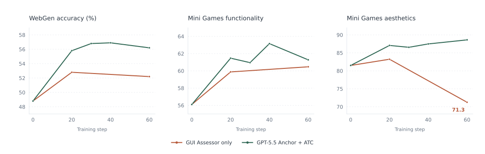
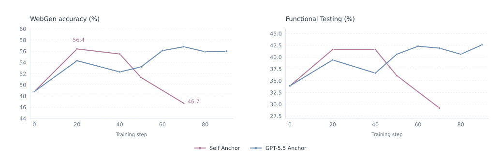
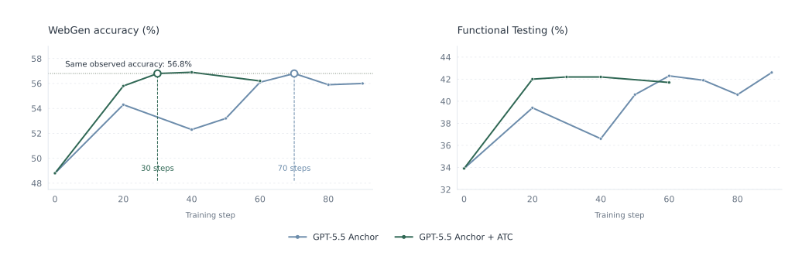

Generating HTML from natural-language specifications is an important application of code large language models (LLMs). Despite producing renderable pages, current models often fail to ensure functionality and visual quality during actual interaction. Existing methods typically target task-specific webpage supervision, leaving demanding interactive artifact optimization underexplored. Using mini-games as a challenging testbed, we expose limitations in interaction experience, reward signal, and credit assignment fidelity that are obscured by shallow webpage interactions. We introduce WebCatalyst, a browser-interaction reinforcement learning framework with three complementary components: a game-level GUI assessor for sustained interaction and evaluation, Visual Anchor for mitigating VLM reward hacking, and Action-Trace Credit for grounding token-level credit assignment in runtime execution traces. Trained on fewer than 1K requests, predominantly for games, WebCatalyst raises the Cookie-Bench Mini Games score from 68.8 to 75.3 and also the WebGen-Bench accuracy from 48.8 to 56.9 on Qwen3.6-35B-A3B, outperforming Claude Opus 4.7 in average rank across evaluated metrics. Further analysis shows that Visual Anchor prevents aesthetic degradation, while runtime-grounded credit assignment accelerates functional improvement. Together, our results show that improving feedback fidelity is the key to substantially advancing interactive HTML generation.
Key result. With 640 training requests, WebCatalyst improves Qwen3.6-35B-A3B’s average rank from 14.0 to 4.0 within the evaluated 20-model pool, with performance comparable to Claude Opus 4.7.
Execute sustained interactions in a real browser. Evaluate state transitions, then aggregate action outcomes and visual judgments into a page-level reward.
§3.1 · Ground judgments in actual execution.02
Visual Anchor
Reward signal fidelity
Close the loophole where easier interactions mask visual degradation. Penalize visual regression relative to a high-quality reference; apply no penalty to comparable or better visuals.
§3.2 · Calibrate the reward against a reference.03
Action-Trace Credit
Credit assignment fidelity
Trace successful actions back to executed JavaScript. Map call stacks to generated tokens, then redistribute the advantage by call depth while preserving its mean.
§3.3 · Assign credit using runtime evidence.
A closer look at sign-aware credit assignment+
Sign-aware, mean-preserving credit assignment
For a positive page advantage, tokens on successful execution paths receive stronger positive updates. For a negative advantage, they receive weaker negative updates relative to untraced tokens.
Normalized token advantages enter the clipped GRPO objective. Successful behavior changes where the signal goes, while the sample-level scale stays intact.
Eq. (7) · Sign-aware modulation and mean-preserving normalization.
Main Results
Training on 640 requests improves both webpage generation and sustained interactive experiences.
Table 1. Main results on WebGen-Bench and Cookie-Bench Mini Games.
20 models · Complete main table
Scroll horizontally to view all metrics →
Table 1. Complete main results: model date, size, all WebGen-Bench and Cookie-Bench Mini Games metrics, average rank, and changes from the base model.
Model
Date
Size
WebGen-Bench
Cookie-Bench Mini Games
Avg. Rank ↓
Start Fail. Rate ↓
Acc. ↑
Content Pres. ↑
User Inter. ↑
Data Mgmt. ↑
Func. Test ↑
Data Display ↑
Design Val. ↑
Aesth. ↑
Func. ↑
Total ↑
Bold marks group-wise best results, with WebCatalyst included in Other LLMs. The shaded rows identify the base model and WebCatalyst. Arrows indicate preferred directions.
Date is YY/MM. Size gives total/active parameters; undisclosed sizes are marked accordingly. Acc., Aesth., and Func. denote accuracy, aesthetics, and functionality. Average rank averages ranks across evaluation dimensions. Δ gives changes from Qwen3.6-35B-A3B as reported in Table 1 ↗.
GUI-only rewards can lead to aesthetic degradation
GUI-only training improves functionality, while Mini Games aesthetics drops from 81.5 to 71.3. A task reward alone can encourage visual simplification.

§4.4.1 · Training dynamics of WebGen accuracy, Mini Games functionality, and aesthetics.
Reference quality affects late-stage performance
Self-anchoring helps early, but WebGen accuracy later falls from 56.4% to 46.7%. A stronger reference better retains late-stage gains, despite fluctuations.

§4.4.1 · Reference quality and late-stage training performance.
With ATC, WebGen accuracy reaches 56.8% at step 30; the same strong anchor without ATC reaches it at step 70. This compares observed checkpoints, rather than wall-clock speed.

§4.4.1 · Action-Trace Credit and training-step efficiency.
Experience diagnostics · §4.4.2
Gains extend across experience dimensions
WebCatalyst improves all six evaluated experience dimensions, alongside the screenshot-aesthetic score. The gains also span all measured action types: overall action success rises from 48.0% to 67.4% (+19.4 percentage points). This suggests broader improvements in interaction quality, rather than gains concentrated in a narrow set of behaviors.
Qwen3.6-35B-A3BWebCatalyst
Reward components
Action transitions
Figure 5 · Experience-dimension and action-transition scores before and after training.
View the numerical results +
Reward components
Dimension
Qwen
WebCatalyst
Visual stability
88.3
94.9
Screenshot aesthetic
75.5
85.1
Feedback clarity
48.7
64.9
Interaction reliability
56.0
69.7
State legibility
76.9
88.9
Prompt alignment
54.0
68.1
Task progress
26.1
42.1
Action transitions
Dimension
Qwen
WebCatalyst
Combo
83.6
85.6
Mouse move / hover
84.1
88.7
Press
76.3
84.2
Terminate
63.2
76.0
Type
93.0
96.0
Wait
74.3
84.5
Success rate (%)
48.0
67.4
Iterative refinement · §4.4.2
Single-shot gains persist under iterative refinement
Without refinement, WebCatalyst reaches a Mini Games Total score of 75.3—comparable to the base model’s 75.2 after two refinement rounds. It maintains a higher Total at every corresponding round and reaches 76.9 at round 3. The advantage therefore persists when feedback from actual browser interaction guides successive revisions, reducing feedback rounds to comparable quality within the evaluated budget.
Qwen3.6-35B-A3BWebCatalyst
Table 3. Mini Games performance under iterative refinement.
Table 3. All aesthetics, functionality, and total scores for refinement rounds 0 to 3.
Round
Qwen3.6-35B-A3B
WebCatalyst
Aes.
Func.
Total
Aes.
Func.
Total
0
81.5
56.1
68.8
87.5
63.2
75.3
1
85.1
57.9
71.5
88.1
63.4
75.7
2
87.7
62.8
75.2
89.5
61.8
75.7
3
86.2
62.1
74.2
91.1
62.7
76.9
Round 0 is the initial generation; rounds 1–3 revise the artifact using feedback from the GUI Assessor. Bold marks the better result for each metric within each round.
§4.4.2 · Table 3 · Mini Games performance with GUI-Assessor-guided refinement.
Interactive Demos
Compare original generated outputs for the same prompt. Watch recorded interactions or open the artifacts to try them directly.
3D flight / Prompt 17
Sky Runner
View the original prompt+
Loading the comparison gallery…
Recorded browser interaction · Original generated HTMLSelected examples illustrate behavior; benchmark results provide aggregate evidence.
Full demo collection
50 prompts × 6 models · 300 generated artifacts
BibTeX
If you find this work useful, please consider citing our paper.
BibTeX
@misc{wang2026webcatalyst,
title = {Catalyzing Interactive HTML Generation
Capabilities via High-Fidelity
Reinforcement Learning},
author = {Xujia Wang and Yixuan Liu and
Shaohan Huang and Furu Wei and
Lei Hou and Bin Xu and Juanzi Li},
year = {2026},
url = {https://github.com/KlozeWang/WebCatalyst}
}